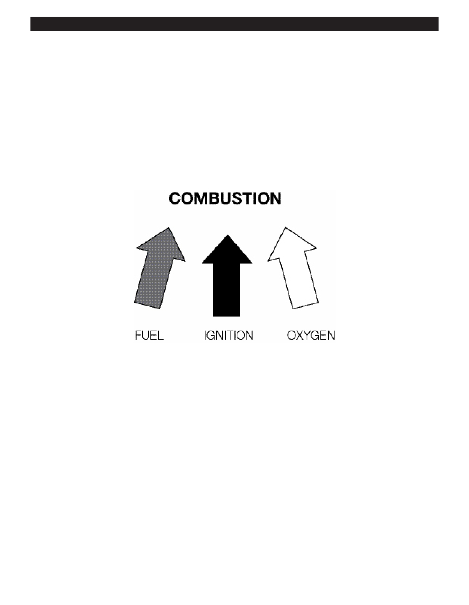

PA RT I C I PA N T R E S O U R C E G U I D E
Gas Furnace Heating
A gas furnace must burn fuel to generate heat. A certain amount of heat is lost as a result
of this burning process, so the efficiency of fuel-burning furnaces is lower than that of
electric heating systems.
Introduction
Gas furnaces use a principle called combustion to create energy and heat. During combustion, fuel is ignited by a flame,
spark, or heat and is allowed to burn until a desired temperature is reached. Oxygen is also combined with the fuel so that
the stored energy in the fuel can be released. All three elements—fuel, ignition, and oxygen—must be present for combustion
to occur.
The efficiency of the combustion is determined by comparing the amount of useful heat produced with the total heat
produced, including the amount that is lost up the chimney vent. If a furnace operates at 85% efficiency, approximately
15% of the heat produced by the burning fuel is lost up the stack. (Electric heating, by the way, is 100% efficient.)
33